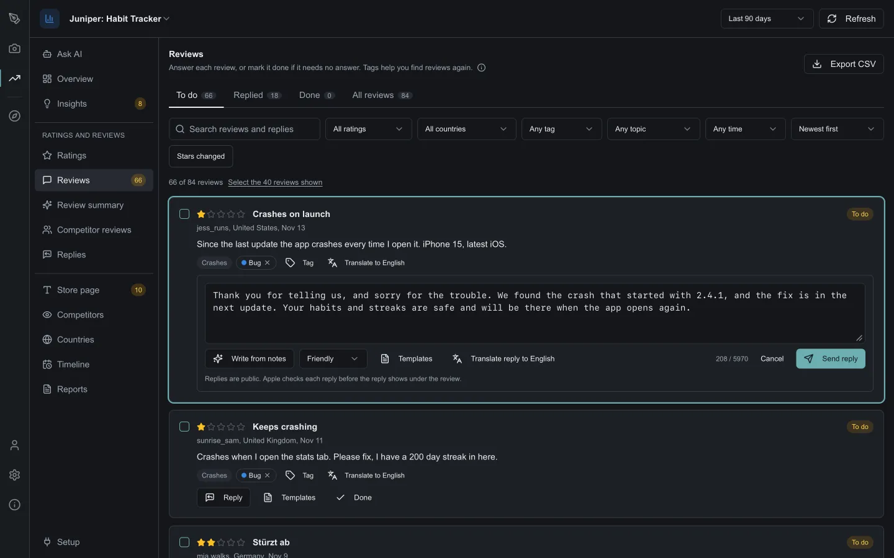
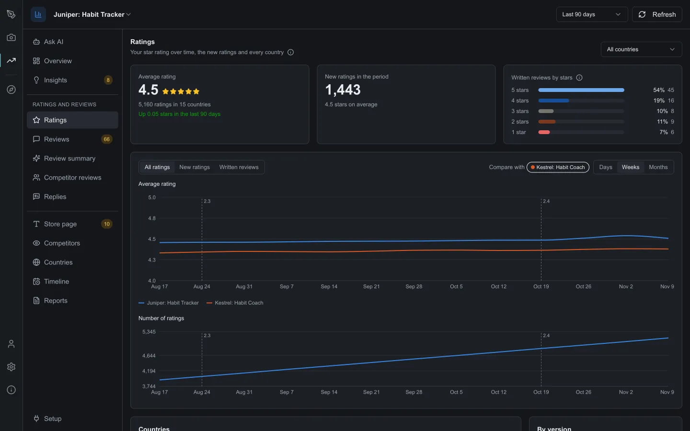
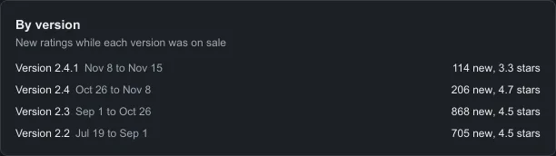
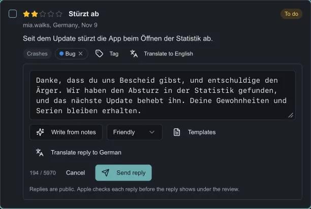
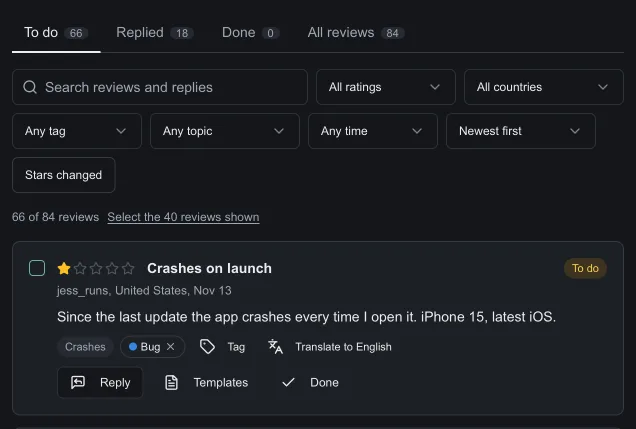
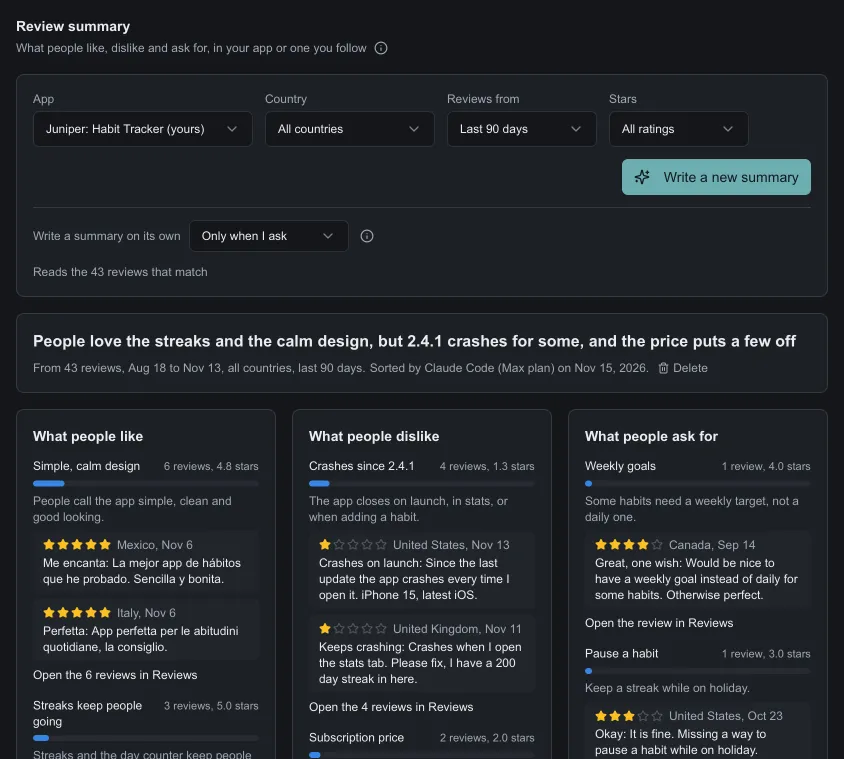
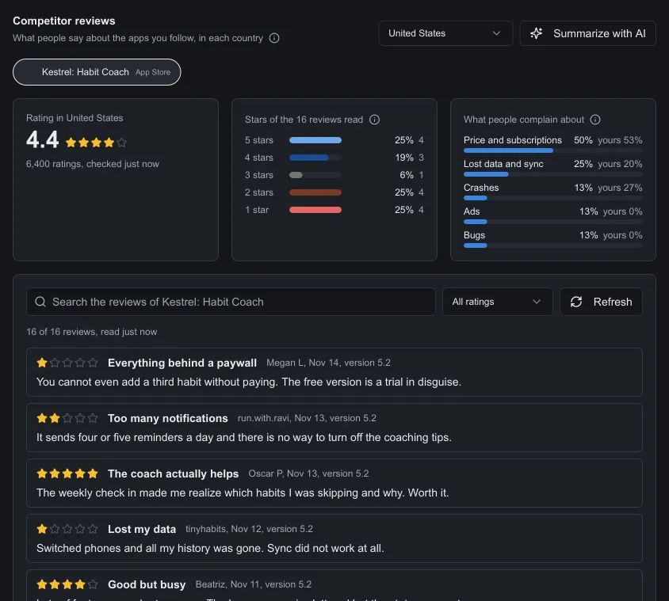
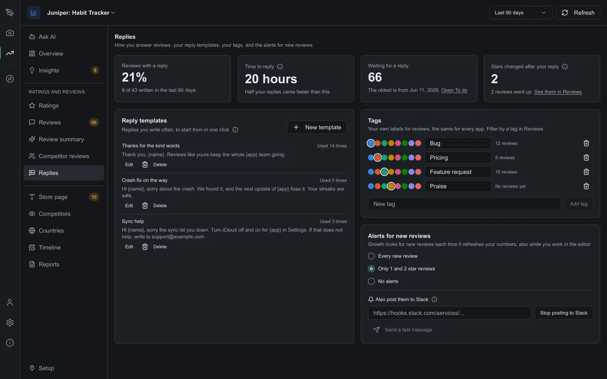

Example app
Example app
Every country, side by side
See your rating in each country, how many ratings you have there and how many are new. Click a country to see just that country
Ratings and reviews
See all your App Store and Google Play reviews in one place, and answer them right there. Watch your star rating in every country, and let AI tell you what people like, what they don't and what they ask for. It's all in Growth, inside the free desktop app
FreeApp Store and Google PlayKept on your computer

01 / Ratings
The App Store and Google Play only show your rating as it is today. So Growth writes your rating down each time it checks, from the first day you use it. Over time, you get a history the stores don't keep

Example app
See your rating in each country, how many ratings you have there and how many are new. Click a country to see just that country

Example appSee how people rated each version of your app, so a bad update stands out right away. Put up to 3 competitors you follow on the same chart to see how you compare
Good to know: Apple doesn't say how many 1, 2, 3, 4 and 5 star ratings you have. So for the App Store, Growth counts the stars in your written reviews instead. For Google Play, Growth reads the star counts from your public Google Play page
02 / Reviews
Reviews you haven't answered come first. Reply to a review, mark it as done, or add a tag like Bug so you can find it again later

Example review and AI replyClick Suggest a reply and AI writes a reply in the reviewer's own language, in the style of your past replies. Choose friendly, formal or short, or start from a reply you saved before

Example appTo do, Replied and Done show what still needs you. Find reviews by stars, country, version, tag, topic or date, and save the list as a spreadsheet file
People can change their stars at any time. If someone changes their stars after your reply, the review tells you, for example Changed from 2 to 4 stars after your reply
Have more than one app? Click Every app to see the reviews of all your apps together. Each reply still goes to the right store
Prefer the keyboard? Press J and K to move between reviews, R to reply, E to mark a review as done, X to tick a review and / to search
03 / Review summary
AI reads up to 200 of your newest reviews and sorts them into topics: what people like, what they don't and what they ask for. Growth then counts the reviews in each topic and shows two of them, word for word
Works with Claude Code or Codex on your own subscription, or the AI you've set up in the app's AI panel

04 / Competitor reviews
Read what people say about the apps you follow, country by country. Their main complaints sit right next to yours
Follow up to 10 apps. You don't need a key or an account to read competitor reviews

05 / Replies
See how many reviews you answered, how fast you answered, and how many people changed their stars after your reply. Your saved replies, tags and alerts are here too

Your data
Growth gets your reviews straight from Apple and Google, with your own keys. Your reviews only leave your computer when you use AI on them or turn on Slack alerts
Read how Growth uses your data$0
Every feature. Both storesGet the desktop app If you use AI, your AI provider may charge youGetting started
Already upload your screenshots from the desktop app? Growth uses the same key, so your reviews may already be waiting for you
It's free for Mac, Windows and Linux. Open it and click Growth, the arrow button on the left
Open Setup and add your key from App Store Connect or Google Play. Not sure how? Ask AI can make the key with you, and it asks before it changes anything
Your reviews show up in a few seconds. Open the app now and then, and your rating history keeps growing
Yes. It's part of the free desktop app, and anyone can read the code on GitHub. If you use AI for replies or summaries, your AI provider may charge you
No. Ratings and reviews needs the desktop app, which is free for Mac, Windows and Linux. In the web version, Growth only has the Competitors screen
The App Store and Google Play only show your rating as it is today. So Growth starts writing your rating down the first day you use it. Written reviews are different: the chart of written reviews goes back to your very first review
No. Nothing is sent until you click Send reply. Apple checks each reply before showing it under the review. Google Play shows your reply right away
The one you pick in Setup: Claude Code or Codex on your own subscription, or the AI you've set up in the app's AI panel. If you leave Setup on Automatic, Growth uses the first one that's ready
Yes, for the apps you follow. On the App Store, Growth can read the newest 500 reviews in each country. On Google Play, Growth keeps the 20 reviews shown on the app's page
On your computer. Growth gets your reviews straight from Apple and Google. A review only leaves your computer when you use AI on the review or turn on Slack alerts
For the people who use your app
Free to use, with the code on GitHub